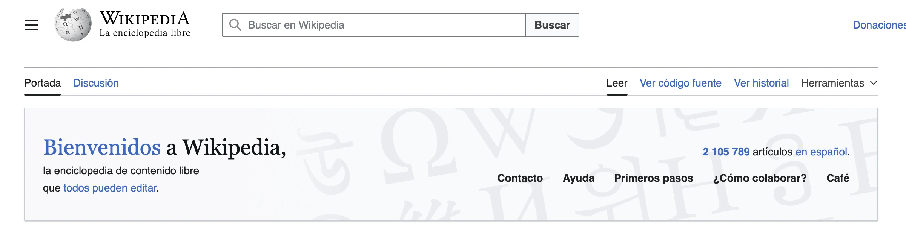
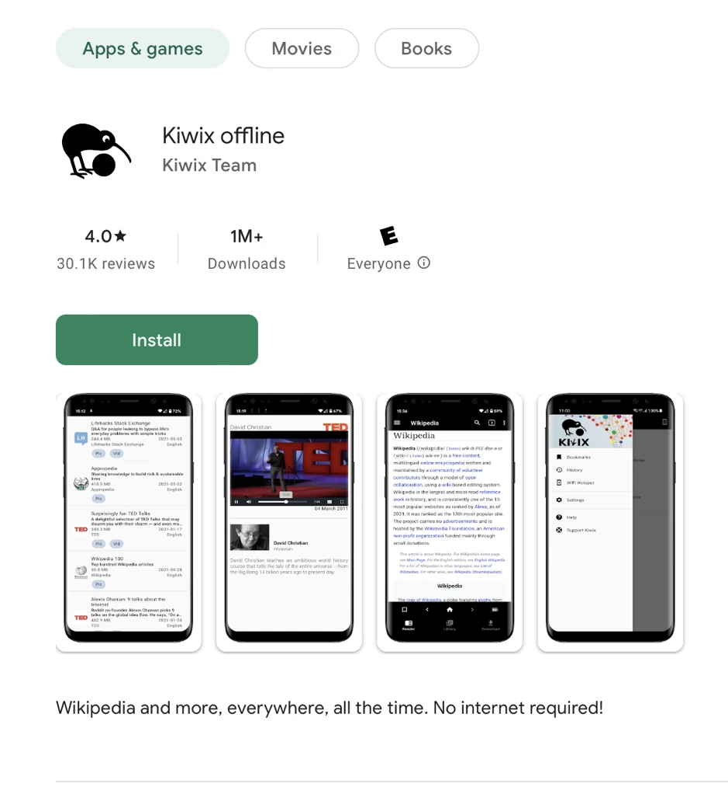
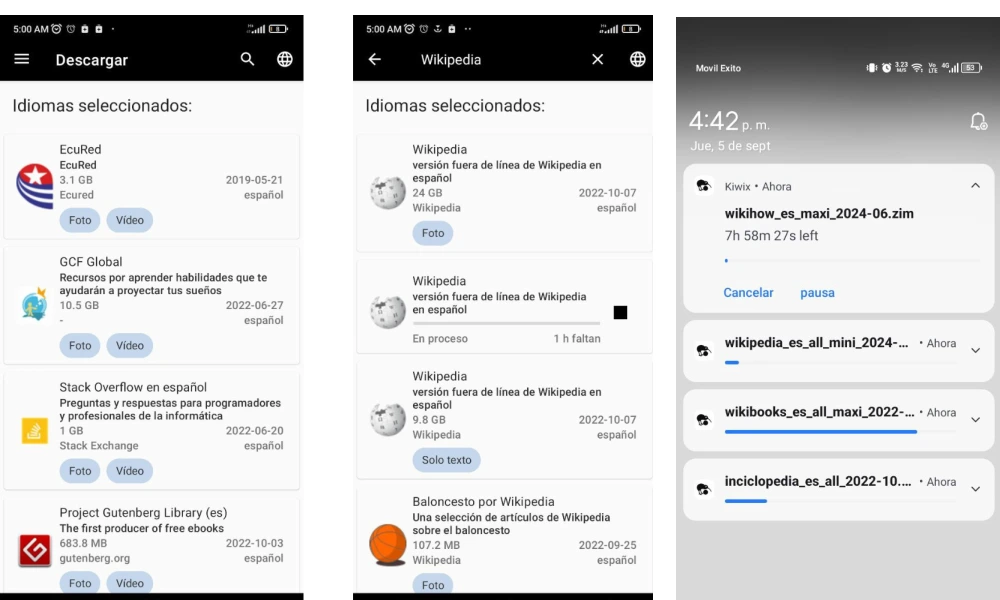
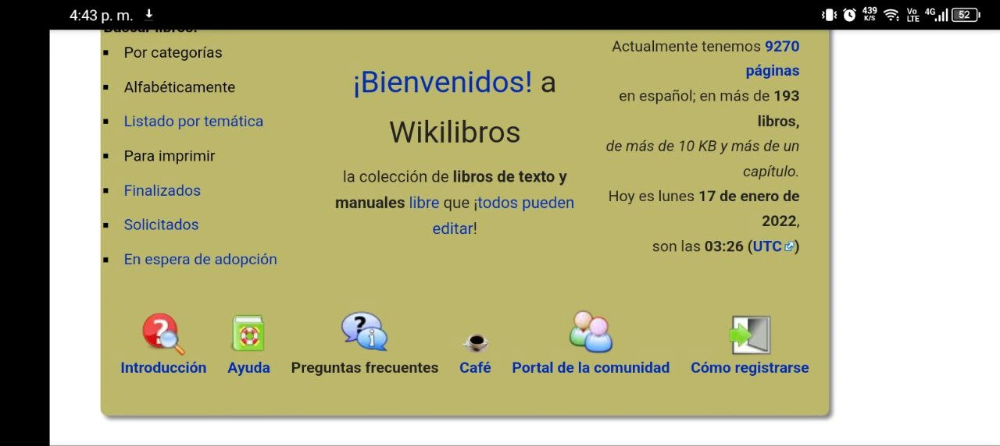
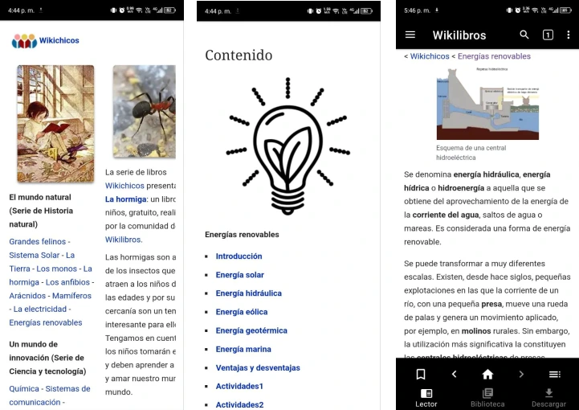

Hi! I’m Catalina, welcome 👋🏽
This solution was originally written by Nicolás. Later, an artificial intelligence (AI) assistant → helped me organize it according to the sections we always use as a guide, and now I’ve come to test it to include the experience and warmth that characterizes Voltaje ⚡⚡ solutions.
I’m not a tech expert, but I’ve learned many things on the Internet and by jumping in to try things out. In fact, I didn’t know you could download a little piece of Wikipedia onto your phone; it was by complementing this solution that I learned something new, and now it’s your turn!
Go for it, you don’t need to know anything about programming; as long as you activate your tinkering spirit, you’ll have more than enough 🛠️💪🏽
What is downloading Wikipedia to your phone?
Wait, wait, wait. I haven’t asked you a question: do you know what Wikipedia is? If you do, you can skip to the next paragraph, but if not, I’ll tell you quickly: it is a free encyclopedia, edited collaboratively online by volunteers and in many languages. It was launched in 2001 by the Wikimedia Foundation, but today, it is a source of information that many people use to get general information on a ton of topics.

Downloading it to your phone means you can have a copy of Wikipedia’s information saved directly to your phone’s memory using an application called Kiwix. The fact that it is stored on your phone is what makes it possible for you to consult it even when you don’t have Internet access.
What is it for and what can you achieve?
Having Wikipedia on your phone allows you to have answers at hand at all times and on a very wide variety of topics. It’s like having an encyclopedia that is easier to update and navigate!
If you have a computer, you can have not only a piece of Wikipedia, but also a piece of the Internet! In this solution, we tell you how to do it: A piece of the internet on offline computers →
However, the most powerful thing about this solution is that it gives you more autonomy because you no longer depend on having credit or signal to learn something new, and even less so to share it with other people.
If you live in a place where there is ZERO signal, and the solutions to get it (like satellite antennas →) are not within the community’s reach, this could be an excellent alternative. You could, for example, get a community phone, download Wikipedia, and rotate it among people so they can make their inquiries. This solution is something like a way to “share the internet” without having a signal.
Before you start…
To download this encyclopedia for the first time, you need a stable Internet connection that hopefully has good bandwidth. You can go to town to an internet cafe, look for a park with WiFi, or ask a neighbor who has a signal for help.
You should also keep the following in mind:
- You need at least 3GB of free space in your phone’s memory (although it is ideal to have more for complete versions).
- If you have an iPhone, you can also search for “Kiwix” in the App Store. The process is very similar, although file permissions may vary slightly.
What do you need?
- An Android phone (or iPhone) with free space and a good Internet connection for the initial download.
- Patience, for the moment of the download.
- Lots of curiosity and a tinkering spirit! Jump in and try it without fear; if something doesn’t work the first time, you can always delete it and try again.
How to do it?
Step 1 → Download and install the Kiwix application
Open your app store (Play Store on Android or App Store on iOS) and search for “Kiwix offline”. Install the application and open it.

Step 2 → Download the content
Inside the application, go to the “Download” menu. Choose your language and search for “Wikipedia” by selecting the magnifying glass. You will find many versions, some heavier, others lighter; some with images and others without. Choose the one that best fits your phone’s available space and press the download button.
I recommend downloading the 3GB one. Once the download starts, you must be patient; you are downloading thousands of articles!

Step 3 → Make inquiries without internet (test it)
When the download finishes, go to the “Library” menu. You will see Wikipedia ready to use.

Now you can put your phone in airplane mode and perform any search to make sure it is working. If you managed to make an inquiry, it means that you now have a ton of collective knowledge on your phone ready to be shared with other people who need it!
With this application, you will be able to, for example, conduct SOLEs and answer many Big Questions. Nico was interested in renewable energy and found these very good introductory contents 👇🏽

Now it’s your turn to explore the application! Autonomous and collective learning is the future, give it your all 👥 💪🏽
Recommendations
- If the phone gets hot or slows down during the download, let it rest for a moment.
- Make sure you have enough battery before starting or have an electrical outlet and the phone charger nearby.
- If you don’t have space, delete old photos or videos before attempting the download.
Other possible internets
Imagine being under the shade of a tree, far from everything, and being able to resolve a question about a crop or a health topic simply by taking out your phone 💭
Having Wikipedia without a signal is proof that knowledge can travel and expand with each one of us. It is a way of “sharing the internet” without antennas, allowing us to continue learning and accompanying others despite the lack of connection. In fact, you can share the Wikipedia you downloaded among SOLEros in the same way that you share Internet with your phone → (via your phone’s Hotspot).
Other Internets are also possible when we forge the connection outside of the typical Internet. In fact, did you know that there are local networks → that don’t work with the Internet but through simple interconnection between several machines?
Sometimes you don’t need super sophisticated infrastructure to invent other possible Internets. It is enough to remember that every time we use and expand conversations between people, through the Internet but also through other means (like using Wikipedia offline), we are generating other possibilities to connect (ourselves) without fear.
Recommended solutions
- With a bit more budget and technical expertise, you can use a device called a Raspberry Pi to browse Wikipedia on more than one phone: Wikipedia on a pocket server (Raspberry Pi) →
- Sharing the Wikipedia downloaded on a phone or a Raspberry Pi is a collective effort. In this solution, we give you some tips for sharing equipment: How to use the game to learn to take care of equipment as a community? →
- If you convince your community to buy a community phone to download Wikipedia, this solution can help you choose the best option (quality-price): How to buy a suitable phone for me? →
References
Change log
| Date | Change | Author |
|---|---|---|
| 2026-04-06 | v1.1: Update to Voltaje structure | Catalina / Gemini |
| 2024-09-05 | v1.0: Initial version | Nicolás |